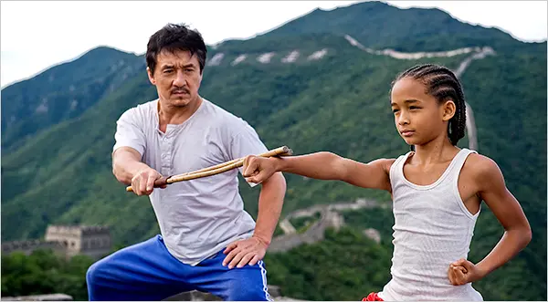

Karate

image sourced from: source
Karate is unarmed combat using the hands and feet to deliver and block blows, widely practiced as a sport. It was formalized in Okinawa in the 17th century and popularized via Japan after about 1920.
Karate is performed barefoot in loose padded clothing, with a colored belt indicating the level of skill, and involves mental as well as physical training
Gear usually consists of
- Helmet
- Gloves
- Knee Guard
- Shin Guard
- Feet Guard
- Rank Belt
but is often unneccasary until you get to a more serious level where you're expected to actually spar
Discipline
click for more | Type | Range |
|---|
| karate | Hand-To-Hand Strikes | Mid |
|---|
| kendo | Bamboo-Stave | Long |
|---|
| judo | Hand-To-Hand Grappling | Close |
|---|